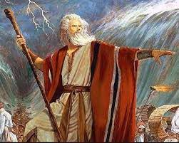

La fundó Abraham aproximadamente en 1800 a.c. Abraham vivía en Ur, pero Dios le informa que debe ir a la tierra prometida. Él fue la primera persona que se comunicó con Dios, por eso es una religión Abrahámica.
Abraham, el primer judio
Sus descendientes van a Egipto obligados y son esclavizados por él faraón. Los libera Moises y llegan hasta la tierra prometida a Abraham, aunque todos mueren antes de llegar por adorar un becerro de oro.
Moises, el mas importante profeta judio
Una vez tomada por la fuerza él regalo de Dios, se dividen en dos reinos: Judá e Israel. De aquí vienen las denominaciones de judio e israelita. Duran años siendo reyes, pero son conquistados por asirios, babilonios y griegos. Judas Macabeo los libera como Moises había hecho tantos años antes con los egipcios. Son anexados en el año 6 por Roma y en él 0 nacer él Mesías,aunque no todos le creen. Esto los divide en dos grupos: Cristianos y Judios, son consideradas dos religiones distintas aunque tengan muchas creencias similares. Se dispersan por el Imperio Romano y después él Sasánida. Siglos de persecucion que llegan a un extremo con él infame Holocausto. Después de la Segunda Guerra Mundial, se establece un lugar para donde enviar a todos estos judios y entonces, forman un nuevo país, Israel. No todos viven allí, están dispersos por él mundo.

La bandera de Israel el mas importante pais judío